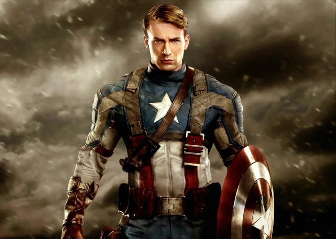

캡틴 아메리카의 '캡틴'은 초창기 코믹스에서는 말 그대로 미국의 대장이라는 뉘앙스로 쓰였으나[4], 시간이 흘러 역사적, 군사적인 요소가 캐릭터에게 추가되면서 미합중국 육군 장교 계급으로서의 '대위'의 의미를 함께 띄는 모습으로 변했다. 그를 지칭할 때 흔히 쓰이는 「캡틴」(혹은 줄여서 '캡')은 그의 계급을 의미하는 뜻이기도 한 것이다. 또한 캡틴이라는 말에는 어벤저스의 넘버 원이라는 의미도 포함한다. 캡틴 아메리카는 어벤저스의 가장 전통적인 지휘관이다.

이후 어벤저스가 이리저리 분화하면서 리더가 바뀌기도 하지만 어디까지나 일부 분파일 뿐이며 보통 어벤저스의 대장이라고 한다면 당연히 캡틴 아메리카를 말한다. 또한 그가 이끌던 부대 '하울링 코만도스'의 지휘관이라는 뜻이 될 수도 있다. 제2차 세계대전 당시 너무 허약해서 미 육군 입대를 거부당할 정도로 빈약한 몸을 지닌 청년이었지만, 조국에 봉사하기 위해 초인 병사 계획에 자원하여 특수 혈청을 맞고 모든 능력을 인간의 한계까지 끌어올린 초인이 되었다. 특유의 캡틴 아메리카 코스튬과 비브라늄 방패를 들고 제2차 세계대전에 참전했다. 버키가 주요 파트너. 주적은 나치와 나치의 초인인 레드 스컬. 2차 대전에서 많은 공적을 세웠으며, 미국인의 우상으로 떠올랐다. 하지만 미사일 해제를 하다가 폭발에 휘말려 북극에 떨어진 후, 동태가 되어 수십 년 동안 냉동 인간이 된다.[5] 다시 각성한 후에는 냉전을 맞아 소련에 대항하여 싸웠다. 현존하는 마블의 인기 히어로들 중[6] 가장 원로급이라 그런지 여러모로 역사적인 인물로 대우받는다. 얼티밋 유니버스에선 아예 뮤턴트 탄생의 원인이며 영화판에서도 헐크 탄생의 간접적인 원인이다. 윗동네인 캐나다에선 대우가 살짝 미묘했다. 어벤저스 1 개봉 즈음 한 신문에서 만화책 특집으로 데이트하고 싶은 슈퍼 히어로 순위를 매겼는데, 꼴찌가 캡틴 아메리카였다. '나 미국 놈이요!'라고 외치는 듯한 디자인과 영화판의 빡빡한 모습 때문에 감점을 받은 듯하다. 남성 히어로 1위는 슈퍼맨이었고 여성 히어로 1위는 원더우먼이었다. v